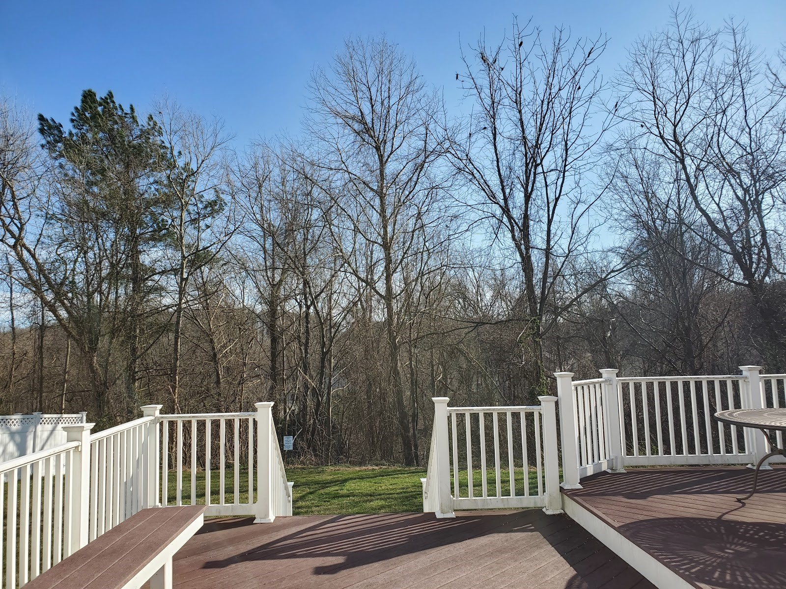

五绝¶
01 - 【如是我闻】¶
（一）
五眼谁为首？金砖你最萌!
莫学他霸道，发展利苍生。
（二）
入道有多途，无分社与资。
黑白非对立，灰里蕴真如。
注：
“入道多途”出自禅宗初祖达摩的【二入四行论】。
汉语成语有“殊途同归”。
邓小平有“白猫黑猫论”。
西方谚语也有“条条大路通罗马（All roads lead to Rome)”。


03 - 【闲居】¶
酒酣思李杜，梦醒念渊明。
桃源今何在，邀月杯中寻。
05 - 【中秋】¶
今宵明月异，万古客心同。
网络虽神妙，乡愁怕太浓。
06 - 【父亲节】¶
父道与天同, 茫茫四宇中。
无穷江海水, 万物尽葱葱。
07 - 【不亦乐乎】¶
远客家乡至, 幽林众鸟欢。
火红枫叶美, 应谢降秋霜。
08 - 【花与雪】¶
窗前几朵开，窗外一片白。
望雪心方净，观花念又来。
09 - 【赞格律诗】¶
方圆因规矩，美玉自雕琢。
格律为何妙？言稀限制多。
11 - 【孤帆远影】¶
孤帆逆水行，远影浪峰轻。
碧海长空尽，欲泊何处停？
12 - 【有感】¶
职海几春秋，浮沉独自游。
幽悠思故水，何日异乡流？
13 - 【裁员】¶
今日裁员走, 十年尽效劳。
旅途分岔口, 职场再开头。
注：
洛克希德马丁公司是美国最大国防供应商。公司主要靠生产武器。因IT服务竞争强烈，利润不如武器制造，洛马把IT业务卖掉。在公司上班整十年。本来想在洛马干到退休。
14 - 【读博】¶
半百读博士， 人生又一关。
学习无止境， 好比日三餐。
注：
从2016年到2019年，在美国宾夕法尼亚州的罗伯特莫里斯大学（Robert Morris University）读信息系统与通信科学博士。2019年5月毕业取得学位，开始人生转型（Transformation）。
16 - 【贺崔大鹏马拉松BQ】¶
猴年马上催，摇滚动春雷。
大展鲲鹏翅，波城又一魁。
注：
BQ = Boston Qualified （波士顿资格）。波士顿马拉松世界著名, 参赛者根据年龄性别必须达到一定的成绩标准才能报名参赛。 知足常跑群崔大鹏在华盛顿摇滚马拉松（Rock N Roll Marathon）获得 B Q。这里把他的名字入诗。催谐崔。
16 - 【知“足”常跑】¶
赤脚亲草地，柔情从心起。
知“足”常跑步，豪放不拘泥。
17 - 【情诗】¶
早知你是鱼，我即化作水。
你如鱼得水，我年年有鱼。
注:
吾弟超芳微信晒鱼缸,引用宋荦题江苏苏州沧浪亭对联“共知心似水，安知我非鱼”。典故出自【庄子·秋水】：
庄子与惠子游于濠梁之上，庄子曰：“倏鱼出游从容，是鱼之乐也。”惠子曰：“子非鱼，安知鱼乐？”庄子曰：“子非我，安知我不知鱼之乐？”
猴哥以情诗一首回应。鱼谐余。
18 - 【裸跑】¶
赤足慢长跑，累赘尽量少。
若非路人多，光屁股更好。
【Barefoot Joggling】
Jog without shoes on
I enjoy so much freedom
If nobody looks on
I rather bare my bottom
19 - 【天涯芳草】¶
奔命半世纪，侨居二分一。
天涯芳草绿，情独钟故里。
20 - 【春】¶
春眠大早醒，被窝读微信。
不怨天涯远，掌上有亲情。
21 【梦】¶
强球十五亿, 夜夜梦黄梁。
梦醒衣冠整, 乖乖去上班。
注：
2016年1月，美国的强球（Power Ball）彩票奖金高达十五亿美金。猴哥买了两张，充满期待，自以为很快就可以辞职退休了。